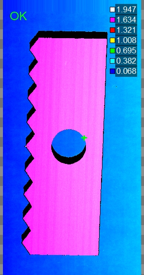
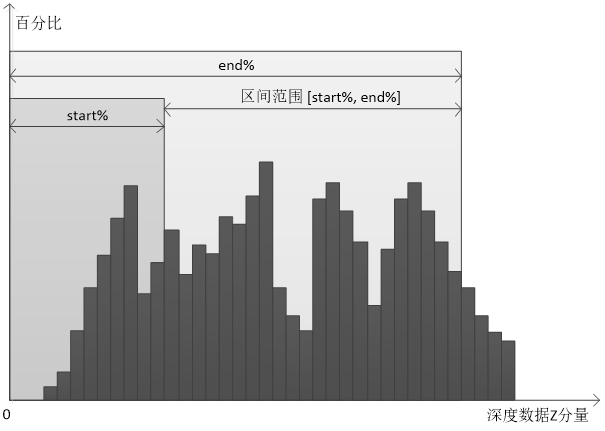

对深度图像中检测区域内某一特征类型的深度数据进行定位，图1所示为检测区域内Z最大的特征点。

| 分类 | 参数名称 | 参数描述 |
|---|---|---|
| 属性窗口 | ROI生成方式 | 分为3种：定位、固定ROI、参考点。其中，定位模式：ROI可以跟随二维线性变换而变化；固定ROI模式：ROI位置不变；参考点模式：根据参考点线建立产品坐标系，再固定偏移生成ROI。 |
| ROI类型 | 检测区域，分为3种：整幅图像、矩形、仿射矩形。 | |
| 特征类型 | 根据深度数据特征类型获取特征点的三维坐标信息。 |
|
| 区间上、下限 | 测量区域的深度数据按照Z分量从小到大排序，然后再获取位于start% ~ end%的深度数据的均值，中值等特征点。取值范围为下限[0,100)，上限(0,100]，且下限小于上限。 |
|
| 启用高低尾部计算 | 选择“是”，则进行直方图统计计算低尾部、高尾部。 | |
| 低尾部分数 | 计算低尾部的比例参数，取值范围为 [0,1]，且高低尾部分数之和小于等于1，参考监视窗口低尾部参数。 | |
| 高尾部分数 | 计算高尾部的比例参数，取值范围为 [0,1]，参考监视窗口低尾部参数，且高低尾部分数之和小于等于1，参考监视窗口高尾部参数。 | |
| 图像窗口 | 深度图像 | 显示待检测的深度图像，显示为伪彩色图像。 |
| 检测区域 | 在图像上显示检测区域。 | |
| 数据链 | 输入深度图像 | 输入待检测的深度图像。 |
| 二维线性变换 | 目标相对于模板的平移、旋转、缩放变换。 | |
| 高级界面 | 无 | 无 |
| 分类 | 参数名称 | 参数描述 |
|---|---|---|
| 监视窗口 | 输入深度图像 | 输入图像的长宽和像素大小，以及深度数据参数。 |
| 特征点 | 检测区域内特征点的三维坐标信息。 | |
| 特征点集 | 检测区域内的所有点。 |
|
| 执行结果 | 工具执行结果。 | |
| 执行时间 | 工具执行时间。 | |
| 图像窗口 | 输入深度图像 | 显示检测的深度图像，显示为伪彩色图像。 |
| 特征点 | 显示特征点结果。 | |
| 数据链 | 数据链 | 同监视窗口参数，供后续工具使用。 |
设区间范围为[start%, end%]，则只有位于区间范围内的数据才是有效的；如图2所示，当对测量区域进行参数配置时，将区域内的深度数据按照Z分量从小到大进行排序，然后再获取位于start% ~ end%的深度数据的均值，中值等特征点。

Step 1 设置检测区域和深度数据特征类型
为了获取深度数据中的特征点三维坐标信息，需要设置检测区域和深度数据特征类型。其中，检测区域有3种：整幅图像、矩形，仿射矩形，而深度数据特征类型有9种：均值、中值、质心、X最大、X最小、Y最大、Y最小、Z最大、Z最小。
均值：检测区域内所有深度数据坐标（X,Y,Z）的均值。
中值：检测区域内所有深度数据坐标（X,Y,Z）的中值。
质心：检测区域内所有深度数据坐标（X,Y,Z）的质心。
X最大值：检测区域内所有深度数据坐标（X,Y,Z）中X坐标最大所对应的深度数据的坐标信息。
X最小值：检测区域内所有深度数据坐标（X,Y,Z）中X坐标最小所对应的深度数据的坐标信息。
Y最大值：检测区域内所有深度数据坐标（X,Y,Z）中Y坐标最大所对应的深度数据的坐标信息。
Y最小值：检测区域内所有深度数据坐标（X,Y,Z）中Y坐标最小所对应的深度数据的坐标信息。
Z最大值：检测区域内所有深度数据坐标（X,Y,Z）中Z坐标最大所对应的深度数据的坐标信息。
Z最小值：检测区域内所有深度数据坐标（X,Y,Z）中Z坐标最小所对应的深度数据的坐标信息。
Step 2 执行测量和输出结果
在设置好检测区域，深度数据特征类型之后，就可以执行测量了。输出的结果为特征点的三维坐标信息。
区间上下限参数，仅在特征类型选择均值、中值、质心、Z最大、Z最小和所有数据时有效，选择X最大、X最小、Y最大、Y最小时无效。
当特征类型选择所有数据时，输出参数特征点集为指定区间内的所有数据点；当特征类型选择其他类型时，特征点集中仅包含一个点，及输出参数特征点。
参见“\Samples\3D\深度图\3D测量工具.gvp”。